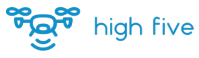

<ion-tabs *ngIf="!isDesktop">
  <ion-tab-bar slot="bottom">
    <ion-tab-button tab="landing">
      <ion-icon name="home-outline"></ion-icon>
    </ion-tab-button>
    <ion-tab-button tab="controls" (click)="openPlugin()">
      <ion-icon name="game-controller-outline"></ion-icon>
    </ion-tab-button>
    <ion-tab-button tab="analytics">
      <ion-icon name="stats-chart-outline"></ion-icon>
    </ion-tab-button>
    <ion-tab-button tab="videos">
      <ion-icon name="videocam-outline"></ion-icon>
    </ion-tab-button>
  </ion-tab-bar>
</ion-tabs>

<div *ngIf="isDesktop" class="desktop">
  <ion-header>
    <ion-toolbar>
      <ion-row class="ion-align-items-center">
        <ion-col size="2">
          
        </ion-col>
        <ion-col size="10">
          <div class="desktop-navbar" class="ion-text-left">
            <ion-button (click)="navigateTo('navbar/landing', 'homeNav')" #homeNav fill="clear" [class]="homeLink[0]">Home</ion-button>
            <ion-button (click)="navigateTo('navbar/analytics', 'analyticsNav')" #analyticsNav fill="clear" [class]="analyticsLink[0]">Analytics</ion-button>
            <ion-button (click)="navigateTo('navbar/videos', 'videosNav')" #videoNav fill="clear" [class]="videoLink[0]">Videos</ion-button>
            <ion-button *ngIf="!isDesktop"  (click)="navigateTo('navbar/controls', 'controlsNav')" #controlsNav fill="clear" [class]="controlsLink[0]">Controls</ion-button>
          </div>
        </ion-col>
      </ion-row>
    </ion-toolbar>
  </ion-header>
  <ion-router-outlet class="desktop-wrapper" ></ion-router-outlet>
</div>

